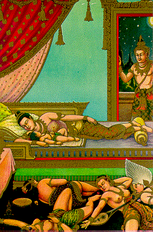
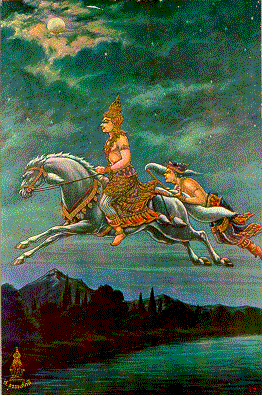

BuddhaSasana Home Page
This document is written in Vietnamese, with
Unicode Times font
| 09 | 10 |
|  |  |
| Great Renunciation: In the day
Rahula, his son, was born, Prince Siddhattha decided to renounce the world. He saw a last
sight to Yasodhara. And he happened to see his ladies in waiting who were sleeping,
showing him their various kinds of ugly manners like cemetery. Ðại Xuất Gia: Khi hoàng nam La-hầu-la chào đời, Thái tử Sĩ-đạt-ta quyết định lìa bỏ đời sống thế tục. Ngài đến thăm Da-du-đà-la lần cuối. Và Ngài thấy các cung phi nằm ngủ mê mệt, như những xác chết xấu xí trong nghĩa địa. |
Prince Siddhattha renounced the
world. He accompanied by his confidant, Channa, rode to the bank of Anoma River. Thái tử Tất-đạt-ta xuất gia, rời bỏ gia đình. Ngài cùng người thị giả, Xa-nặc, cởi ngựa đến bờ sông Anoma. |
[Mục Lục][01-02][03-04][05-06][07-08][09-10][11-12][13-14]
[15-16][17-18][19-20][21-22][23-24][25-26]][27-28][29-30][31-32]
Source: Post Cards from S. Dhumphakdi & Sons Publisher, Bangkok, Thailand